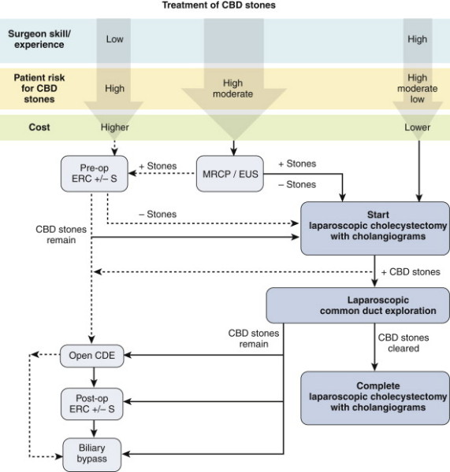

Bile
Duct Exploration : Laparoscopic
Indications
Abnormal IOC
ERCP is successful >70-90% of the time, depending on who's doing
it.
- but often pts exposed to ERCP and will have a normal study, and
ERCP + S has high morbidity (perhaps 10%) and a definite mortality
rate (perhaps 1%)
Choice of approach should be based on local expertise and patient
factors
- have to be experienced to get good results and must be able to be
versatile with different options to truly succeed.
Contraindicated if instability, hazardous patient or abdominal
conditions eg portal hypertension or severe inflammation.
Success rates >90% in experienced hands (80% of transcystic;
depends on stone size).
Length of stay
- 1.5d for transcystic, up to a week for trans-CBD.
Should you be able to do it?
Yes if you are a biliary tract surgeon, otherwise probably not
unless doing a great volume of gallbladders.
- why better: treat in one procedure, with shorter stay, not exposed
to morbidity of ERCP.
Special Preparation
Can
approach through cystic duct or by choledochotomy
- transcystic preferred first option; less invasive; less morbid;
better outcomes.

Choledochotomy must be avoided if duct <6mm, marked inflammation
or surgeon inexperienced / poor suturing ability.
Cystic duct route avoided if aberrant cystic duct anatomy / entrance
into CBD, small <4mm, stones >6mm.
Warn anaesthetist it will take at least an hour, given setup time,
complex patients, additional procedures etc.
Prep
Need for transcystic basket retrieval:
- glucagon 1-2 mg
- Riddick-olsen clamp
- insert large yellow cholangiogram catheter (?4Fr)
- connect to Y-connector, flush.
- zero-tipped ureteric stone extraction basket / catheter
- saline flush
- contrast
Need for choledoscopy
- second camera, stack, scope pressurized water, 4-0 or 5-0 vicryl
- T-tube
- side-viewing scope if going to attempt sphincterotomy.
Procedure
Irrigation Techniques
Glucagon 1-2 mg IV by anaesthetist
- then gently flush after 10-30s with saline and repeat IOC
- good for very small stones <3mm or sludge, otherwise it won't
work.
Transcystic retrieval
1. Intubate duct with cholangiogram catheter through riddick olsen
clamp
2. Under II guidance feed down correct limb of biliary tree toward
duodenum.
3. Identify stone.
4. Pass basket catheter, past stone, pull back, open basket,
retrieve stone advancing catheter as closing down on stone.
5. Retrieve via cystic duct.
Balloon Techniques
14 Fr Fogerty used down common duct, inflated and withdrawn
- will "usually" pull stone back into cystic rather than hepatic
duct; then use table position to return it to the CBD.
Choledochoscopic
When other methods fail.
Guide scope into duct, saline instillation through working channel
for visualization
Need both hands one on controls, one on scope
Watching 2 screens at once, manipulate scope so stone seen and
insert basket down working channel to retrieve.
Lap Choledochotomy
1 cm incision down
duct, or as big as largest stone.
- use sharp lap scissors
- do not place stay
sutures.
Completion
1. Completion cholangiogram.
2. Close cystic duct with clips +/- endoloops
3. Close choledochotomy, with or without T-tube
- if residual ductal obstruction
- if ductal access required for imaging
- if residual stones.
4. Drain if choledochotomy
T-tube
--> 14Fr T-tube, prepare by removing back wall of T portion.
--> place in abdo via 10mm port, insert top of T into duct, close
CBD with 4 or 5-0 vicryl, interrupted sutures.
--> pull tube out of 5mm RUQ port with direct route inject
saline, ensure not leaking else resuture.
Remove somewhere between 4 days and 6 weeks - "most appropriate plan
lies somewhere between these two extremes".
Disadvantages:
- bacteraemia, dislodgement, obstruction, fracture.
- complications of removal include bile leak, peritonitis,
re-operation
Why not primary closure of
choledochotomy?
No evidence against it, advantages of shorter time, better
patient satisfaction.
No formal evidence either way it seems.
Use t-tubes if concern for retained debris, distal spasm,
pancreatitis, general poor tissue quality, severe infection.
Post-Op
LFTs
Complications
Morbidity 8%; usual surgical complications
But very leak rate, low mortality and serious complications in
experienced units
Alternatives and Controversies
ERCP